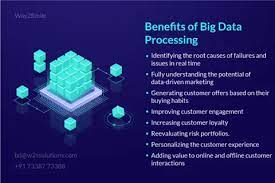

Benefits of Big Data Processing
Ability to process Big Data brings in multiple benefits, such as-Businesses can utilize outside intelligence while taking decisions
Access to social data from search engines and sites like facebook, twitter are enabling organizations to fine tune their business strategies.
Improved customer serviceTraditional customer feedback systems are getting replaced by new systems designed with Big Data technologies.
In these new systems, Big Data and natural language processing technologies are being used to read and evaluate consumer responses.
Early identification of risk to the product/services, if anyBetter operational efficiencyBig Data technologies can be used for
creating a staging area or landing zone for new data before identifying what data should be moved to the data warehouse. In addition,
such integration of Big Data technologies and data warehouse helps an organization to offload infrequently accessed data.
For more infromation click here اضغط هنا
